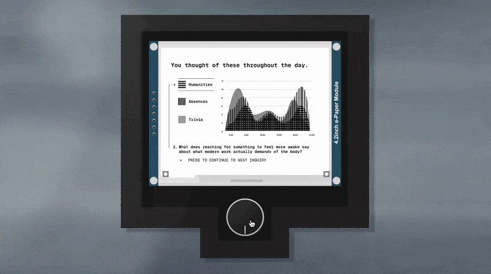
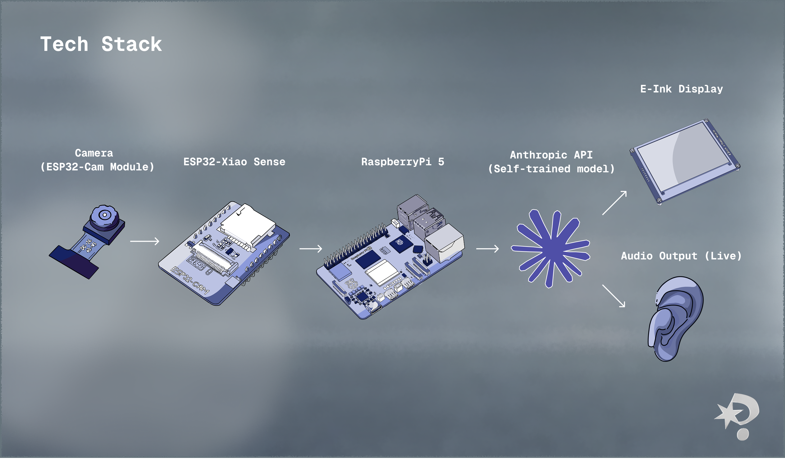
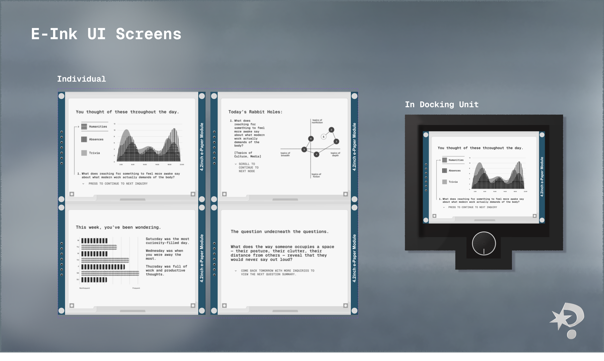

AI/wearable · hackathon · March 2026
Curiosity Agent
Product Strategy,
AI Model Trainer
Esteban Romero,
Liam Peterson,
Isabella Tedesco
Raspberry Pi, React
Other AIs answer. This one questions.
A 48-hour hackathon project: a wearable that asks questions instead of answering them, designed to augment human cognition rather than replace it.
We built AI to answer questions. Nobody asked what we'd stop asking.
The dominant behavior pattern in AI today is offloading: ask it something, get the answer, move on. The cognitive effort that used to live in curiosity gets outsourced before it has a chance to develop into anything.
The gap isn't in AI's ability to inform, but that nothing is designed to make you more curious. Every tool closes the gap between question and answer. We wanted to sit in that gap instead.
How might we design an AI that augments curiosity rather than replacing it — one that asks better questions than you'd think to ask yourself?
Everyone we spoke to had quietly stopped wondering.
We ran three research threads in parallel with building: conversations, personal observation, and desk research on how curiosity is taught.
1. Conversations
We spoke with people about their daily AI use. The pattern was consistent: search, summarize, generate. Almost no one described a moment where AI made them think harder or look more carefully. Several noted they'd stopped Googling things they used to be curious about.
2. Personal observation
The team's own experience confirmed it. The reflex to resolve uncertainty immediately has replaced the reflex to sit with it. Curiosity requires a gap — a question without an immediate answer. Our tools keep closing that gap before we've had a chance to inhabit it.
3. How teachers cultivate curiosity
Research on pedagogical curiosity converges on one method: questioning over answering. The most effective educators give them better questions and let the tension do the work. We asked what it would look like to build that into a wearable.
A wearable that watches the world with you — and asks what you didn't think to.
Clip-worn camera → Anthropic API + Raspberry Pi backend → single open-ended question delivered via audio. The question is drawn from one of six registers — Observational, Social, Intentional, Prior Life, Predictive, Absence — selected by the model based on what the scene most calls for.
At the end of the day, an e-ink display surfaces patterns across the questions asked: what kept appearing, what was never asked about.
During use, there's no screen, no prompt, nothing to manage. The device handles the rest.

Three things we got wrong before we got right.
Prompt architecture
Early prompts asked the model to generate a question from the image. The output was functional but flat: it named what was already visible rather than opening anything new (or the question was far too vague). Structuring the output around six distinct registers changed the quality immediately. The model now selects a register based on what the scene warrants, then generates within it. The selection became part of the intelligence.
Register selection logic
The initial logic cycled through registers semi-randomly. Testing revealed tonal mismatches — Predictive questions on static scenes, Observational questions on charged social situations. We moved to contextual selection: the model reads the image, infers the most generative register, and commits. Questions became noticeably sharper.
E-ink display — the pivot
The original concept was audio-only. In testing, questions felt ephemeral — heard, but not held. We added the e-ink display midway through as a memory layer. E-ink was deliberate: slow, persistent, ambient. It doesn't pulse or refresh. The display UI iterated around how much to show and how to represent pattern without over-explaining. The final version shows question history alongside synthesized themes — not a summary of your day, but a reflection of what you kept noticing.

Six ways of seeing. One question at a time.
The shipped device: clip-worn camera, Raspberry Pi + Anthropic API backend, audio output. Six question registers, contextually selected. E-ink end-of-day synthesis. No screen during use.



The hardest constraint was giving the user less.
The system surprised us. We expected useful questions. We didn't expect poetic ones — questions about absence, about the feeling a space was built to produce, about things that weren't there. There were moments in testing where the device asked something none of us would have arrived at on our own.
What I learned: every instinct in product design pushes toward more — more features, more feedback, more resolution. This project required the opposite. The device had to withhold. It had to trust the question without following it up with an answer. Knowing when to stop the interaction is a design decision too.